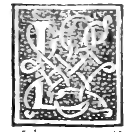

CAPITEL XXXI¶
Die Seiten aller fünf regelmässigen Körper zu finden.

Die Seiten der fünf vorgenannten Körper, die sammtlich l genau von ein und derselben Kugel umschrieben worden, von ‘ welcher Kugel der Durchmesser uns allein vorliegt, durch den genannten Durchmesser zu finden wissen, — Es sei z. B. der Durchmesser irgend einer Kugel uns gegeben, mittelst dessen wir die Seiten der fünf vorhergenannten Körper finden sollen, welche sämmtlich als derselben Kugel einbeschrieben zu verstehen, so dass, wenn einer ihrer Eckpunkte sie berührt, sie alle berühren, d. h. dass genannte Kugel sie alle genau umschliesst.
Das werden wir folgendermassen machen: Wir theilen diesen Durchmesser im Punkte c derart, dass ac das Doppelte von bc sei, und halbiren ihn zugleich im Punkte d. Und wir schlagen über ihm den Halbkreis afb, nach dessen Umfange zwei Senkrechte zur Linie ab gezogen werden, welches ce und df sein mögen. Und wir verbinden e mit a und b. Dann ist nach dem Beweise der dreizehnten des dreizehnten klar, dass ae die Seite der Figur von vier dreieckigen und gleichseitigen Oberflächen ist, und zufolge des Beweises der vierzehnten des Genannten, dass eb die Seite des Kubus ist, und nach dem Beweise der fünfzehnten, dass fì) die Seite der Figur von acht gleichseitigen Dreiecksflächen ist.
Und es sei nun im Punkte a die Linie ag senkrecht zu ab, und auch gleich derselben ab. Sodann verbinde man g mit d, und sei h der Punkt, worin gd die Peripherie des Halbkreises theilt. Und man führe hk senkrecht auf ab. Und weil ga das Doppelte von ad, so wird nach der vierten des sechsten hk das Doppelte von hd sein. Denn es sind die beiden Dreiecke gad und hkd nach der zweiunddreissigsten des ersten gleichwinklig, sofern der Winkel a des grössern gleich dem Winkel k des kleinern ist, weil jeder ein rechter und der Winkel d beiden gemeinsam ist. Daher ist nach der vierten des zweiten hk in Potenz das Vierfache von kd.
Somit ist nach der vorletzten des ersten hd in Potenz das Fünffache von kd. Und insofern db = hd ist (weil d das Centrum des Halbkreises), so wird ebenfalls db in Potenz das Fünffache von kd sein. Und sofern die ganze ab doppelt so gross wie die ganze bd, sowie die der ersten ab entnommenen Strecke ac das Doppelte von cb ist, die von der zweiten, bd fortgenommen, so. wird nach der neunzehnten des fünften bc, der Rest von der ersten doppelt so gross sein, wie cd, der Rest von der zweiten. Daher ist die ganze bd das Dreifache von cd.
Daher ist das Quadrat von bd das Neunfache, d. h. neunmal so gross als das Quadrat von cd. Und weil es selber i) nur das Fünffache von kd’’war, so wird riach dem zweiten Theile der zehnten des fünften dc’ <ikd~ und deshalb dc<Ckd sein. Es sei daher dm=kd, und es gehe mn, welche senkrecht zu ab sei, bis zur Peripherie und man verbinde n mit b. Sofern nun dk und dm einander gleich sind, so werden zufolge der Definition davon, dass irgend eine Linie vom Centrum aus equidistant ist, die beiden Linien hk und mn gleichweit vom Centrum entfernt, und daher zufolge des zweiten Theils der dreizehnten des dritten und des zweiten Theils der dritten des genannten einander gleich sein.
Daher ist m?i = mk, weil hk ihm gleich war, und weil ab das Doppelte von bd und km das Doppelte von dk. Und da das Quadrat von [bd das Fünffache des Quadrats. von dk, so wird zufolge der fünfzehnten des fünften auf gleiche Art das Quadrat von ab das Fünffache des Quadrats von km sein, weil sich das Quadrat des Doppelten zum Quadrate des Doppelten verhält, wie das Quadrat des Einfachen zum Quadrate des Einfachen. Und zufolge des Beweises der sechzehnten zeigt es sich, dass der Kugeldurchmesser in Potenz gleich dem Fünffachen der Sechsecksseite des auf das reguläre Ikosaeder bezüglichen Kreises ist. Also ist km gleich der Sechsecksseite des der Figur von zwanzig Flächen zugehörigen Kreises.
Denn der Durchmesser der Kugel, der ab ist, ist in Potenz gleich der Fünffachen sowohl der Sechsecksseite des Kreises jener Figur, als der von mk. Und ferner auch ist zufolge des Beweises derselben!) offenbar, dass der Durchmesser der Kugel zusammengesetzt ist aus der Sechsecks- und den beiden Zehnecksseiten des auf die Figur von zwanzig Flächen bezüglichen Kreises. Sofern nun km so gross ist, wie die Seite des Sechsecks, und auch ak = mb ist, weil sie, Reste oder willst du sagen Ueberbleibsel der gleichen Stücke sind; so wird, nachdem man diese gleichen davon weggenommen, mb als Seite des Zehnecks übrig bleiben.
Weil nun mn als Sechsecksseite sich ergibt, da sie gleich km ist, so wird nach der vorletzten des ersten und der zehnten des dreizehnten nb als Seite des Fünfecks des der Figur von zwanzig Flächen zugehörigen Kreises sich ergeben. Und weil aus dem Beweise der sechzehnten des genannten hervorgeht, dass die Seite des Pentagons des zur Figur von zwanzig Flächen gehörigen Kreises die Seite derselben Figur von zwanzig Flächen sei, so ist klar, dass die Linie nb die Seite dieser Figur sei.
Man theile daher eb (welches die Seite des von der angenommenen Kugel genau umschlossenen Kubus ist), stetig im Punkte p, und sei ihr grösserer Abschnitt pb, so ist nach dem Beweise des Vorhergehenden klar, dass pb die Seite der Figur von zwölf Flächen sei. Es sind daher die Seiten der fünf vorher aufgestellten Körper mittelst des uns allein vorgelegten Durchmessers der Kugel gefunden, welche Seiten folgende sind, nämlich: ae der Pyramide von vier Flächen, eb Seite des Kubus, fb Seite des Achtflächners und nb Seite des Zwanzigflachners, und die Linie pb Seite des Zwölfflächners.
Und welche von diesen Seiten die grössern untereinander sind, ergibt sich so: Es ist klar, dass… aeZ>ß> weil der Bogen aeZ> Bogen /6 und weiter…. fb eb und die Seite eb > nb Und ich behaupte weiter, dass nbpb Denn sofern ac das Doppelte von cb, so wird nach der vierten des zweiten das Quadrat von ac das Vierfache vom Quadrat von cb sein. Und nach dem zweiten Theile des Corollariums der achten des sechsten, und das Corollar der siebenzehnten des genannten ist klar, dass das Quadrat von ab das Dreifache des Quadrats von bc ist.
Aber es verhält sich nach der einund zwanzigsten des sechsten: ab”: be’ = be”: bc’ da die Proportion statthat, von: ab:be = be: bc nach dem zweiten Theil des CoroUars der achten des sechsten. Daher ist nach der elften des fünften das Quadrat von be das Dreifache vom Quadrat von bc. Und weil das Quadrat von ac das Vierfache desselben Quadrats ist, wie nachgewiesen worden, so wird nach dem ersten Theile der zehnten des fünften ac’> be’ sein, und darum wird die Linie acZ, be, und darum umsomehr am grösser sein.
Und es ist schon aus der neunten des dreizehnten offenbar, dass wenn die Linie am stetig getheilt ist, ihr grösserer Abschnitt die Linie km sein wird, die gleich mn ist, und ferner wenn be nach derselben Proportion, d. h. stetig getheilt wird, ihr grösserer Abschnitt die Linie jpb ist. Sofern nun die ganze am grösser als die ganze be ist, wird inii, welches gleich, dem grössern Abschnitte am, grösser sein als pb, welches der grössere Abschnitt von eb ist. Und dies ist offenbar, nach der zweiten des vierzehnten Buchs, die ohne Hilfe irgend einer derer, welche folgen, mit festem Beweise festgestellt wird. Also ist nach der neunzehnten des ersten viel stärker iibpb.
Daraus erhellt, dass die Seiten der fünf vorgenannten Körper fast mit derselben Ordnung, wie sie unter einander folgen, sich gegenseitig überschreiten. Nur dieses hat den Einwurf, nämlich diese Ordnung wird nicht beim Kubus und dem Oktaeder, d. h. dem Achtflächner bemerkt, indem die Seite des Oktaeders die des Kubus übertrifft, unbeschadet, dass der Kubus dem Oktaeder hinsichtlich seiner Anfertigung und Bildung vorausgeht, wie aus dem dreizehnten erhellt, und das ist nicht ohne Geheimniss. Daher stellt sich hinsichtlich seiner Bildung der Kubus dem Oktaeder voran, weil sich durch dieselbe Theilung des Durchmessers der vorgelegten Kugel die Seite der Pyramide von vier dreiseitigen Grundflächen und die Seite des Kubus findet.
Es ist also die Seite ae der Pyramide grösser, als die Seiten aller übrigen Körper, und ihr zunächst folgt bf, die Seite des Oktaeders, grösser als die Seiten aller übrigen Körper, welche nach ihr folgen. Und drittens folgt der Grösse nach eb, die Seite des Kubus, und viertens kommt nbj Seite des Zwanzigflächners, d. h. Ikosaeders, und der klemsten von allen ist pb, Seite des Dodekaeders, d. h. Körper von zwölf pentagonischen Grundflächen.